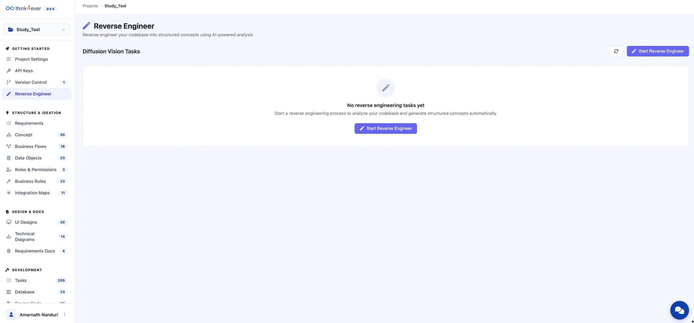
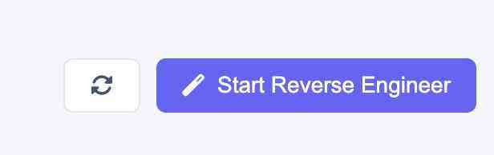
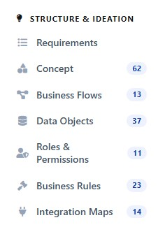
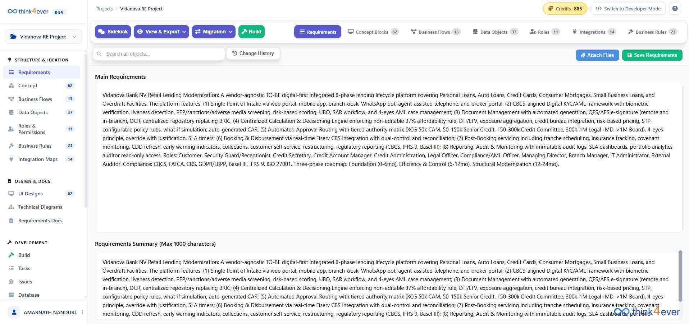

Reverse Engineering
Overview
The Reverse Engineer module utilizes AI-powered analysis to deconstruct your existing codebase, database schemas, or legacy documentation. It transforms raw data into Structured Concepts, allowing the platform to understand your current logic and build upon it without manual data entry.

Diffusion Vision Tasks
This dashboard manages your reverse engineering workflows.
- Task Status: If no analysis has been performed, the screen displays "No reverse engineering tasks yet." * Process Flow: Once a task is initiated, this area will track the progress of the AI's analysis, displaying task names, timestamps, and completion statuses.
Key Features & Functionality
- Codebase Analysis: Upload or link existing source code to identify data structures, API endpoints, and business logic.
- Schema Mapping: Ingest database SQL files to automatically generate Data Objects within the platform.
- Structured Concept Generation: The AI converts its findings into high-level concepts that populate the Concept, Business Flows, and Data Objects sections in the sidebar.
How to Start Reverse Engineering

To begin an analysis task:
- Click the blue "Start Reverse Engineer" button (found both in the center of the screen and the top-right corner).
- Select your Source Type (e.g., File Upload, Git Repository Link, or Database Connection).
- Configure the Scope of the analysis by selecting specific folders or tables to include.
- Launch the task and monitor the Diffusion Vision Tasks list for real-time updates.
Why Use Reverse Engineering?
- Accelerated Onboarding: Quickly bring an existing project or legacy system into the platform for modernization.
- Consistency: Ensure that new features developed in the Development section are 100% compatible with your existing data structures.
- Documentation Recovery: Generate fresh Requirements Docs and Technical Diagrams for projects that currently lack them.
Structure & Ideation

The Structure & Ideation section is the architectural heart of the platform. It is here that the high-level goals defined in your Requirements are decomposed into functional, technical, and logical building blocks.
This section serves as a bridge, turning "what" the system should do into "how" it will actually work.
